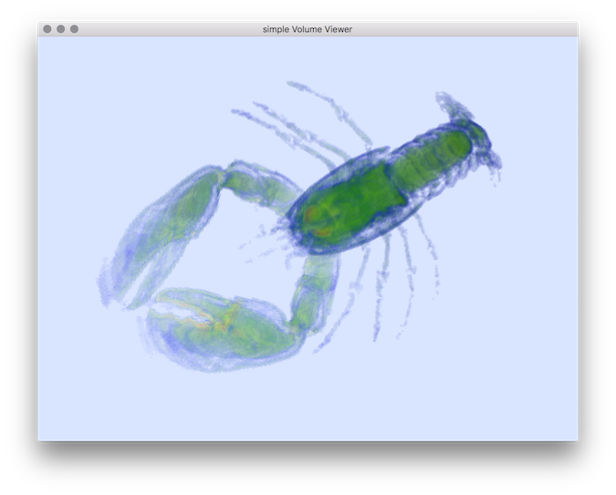

Loading...
Searching...
No Matches
Visualization
- Author(s) of this documentation:
- Bertrand Kerautret
- 2dCompImage : compare images and displays differences (squared and absolute differences).
- 3dCompSurfelData : computes generic scalar surfel data comparisons (squared error) ( given from an input data file and from a reference one).
- 3dCurvatureViewer : permits to compute and visualize mean or gaussian curvature of binary shapes.
- 3dCurvatureViewerNoise : same as 3dCurvatureViewer, but allows to add some noise to objects.
- 3dCurveViewer : displays a 3D curve given as the input filename (with possibly projections and/or tangent information) by using PolyscopeViewer.
- 3dDisplaySurfelData : displays surfel data from SDP file with color attributes given as scalar interpreted as color.
- 3dHeightMapViewer : displays 2D image as heightmap by using PolyscopeViewer.
- 3dImageViewer : displays volume file as a voxel set by using PolyscopeViewer.
- 3dImplicitSurfaceExtractorBy4DExtension : computes the zero level set of the given polynomial.
- 3dImplicitSurfaceExtractorByThickening : computes the zero level set of the given polynomial.
- 3dSDPViewer : displays sequence of 3d discrete points by using PolyscopeViewer.
- 3dVolBoundaryViewer : displays the boundary of a volume file by using PolyscopeViewer.
- 3dVolViewer : displays volume file as a voxel set by using PolyscopeViewer.
- displayContours : displays discrete contours.
- meshViewer : displays OFF mesh file by using PolyscopeViewer.
- patternTriangulation : draws the Delaunay triangulation of a pattern using DGtal library.
- volscope : a new generic VOL file viewer using polyscope.
 |  |  |
| 3dCurvatureViewer | 3dCurvatureViewerNoise | |
 |  |  |
| 3dImageViewer | 3dVolViewer | 3dImplicitSurfaceExtractorByThickening |